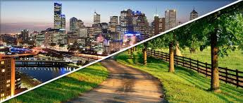

Assista ao Vídeo:
Imagem da Conexão
Uma paisagem que mistura o verde do campo com os arranha-céus das grandes cidades.
Uma celebração das tradições rurais e urbanas, em harmonia com a modernidade.
O Programa Agrinho é um programa de responsabilidade social que visa promover a educação ambiental, o desenvolvimento sustentável e a cidadania em escolas públicas e privadas, especialmente nas zonas rurais. Ele incentiva a participação ativa de estudantes, professores e comunidade em projetos que abordam temas como agricultura, meio ambiente, saúde, cidadania e empreendedorismo.
Uma paisagem que mistura o verde do campo com os arranha-céus das grandes cidades.